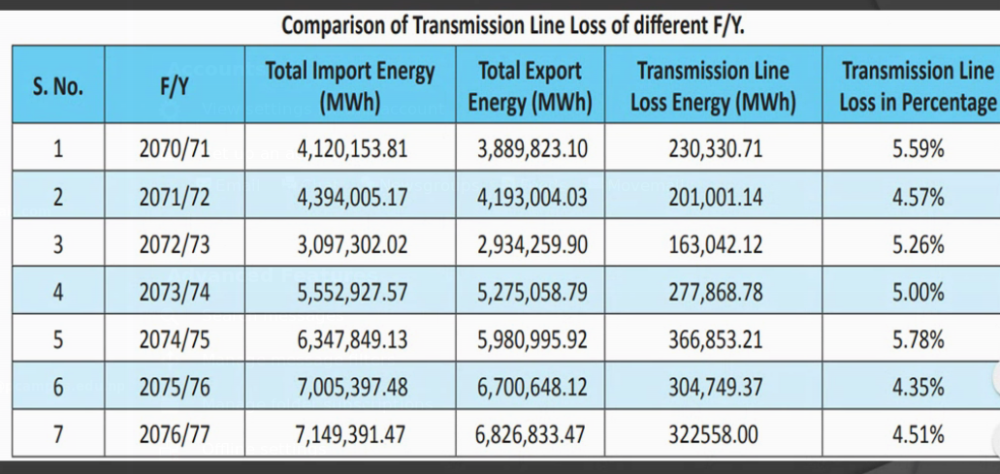
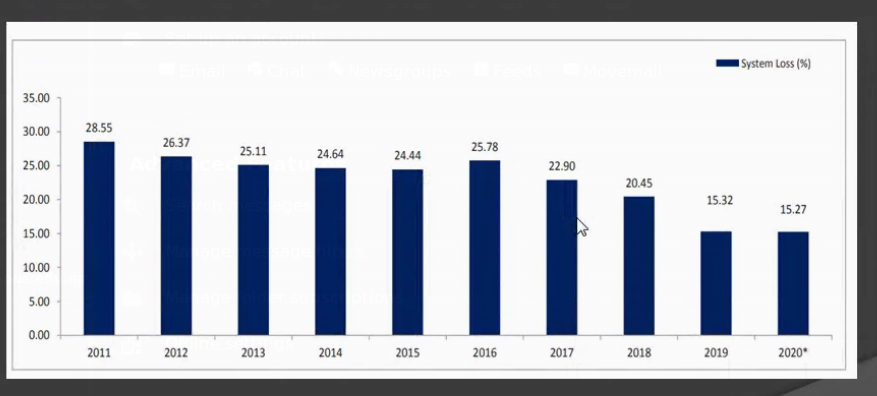
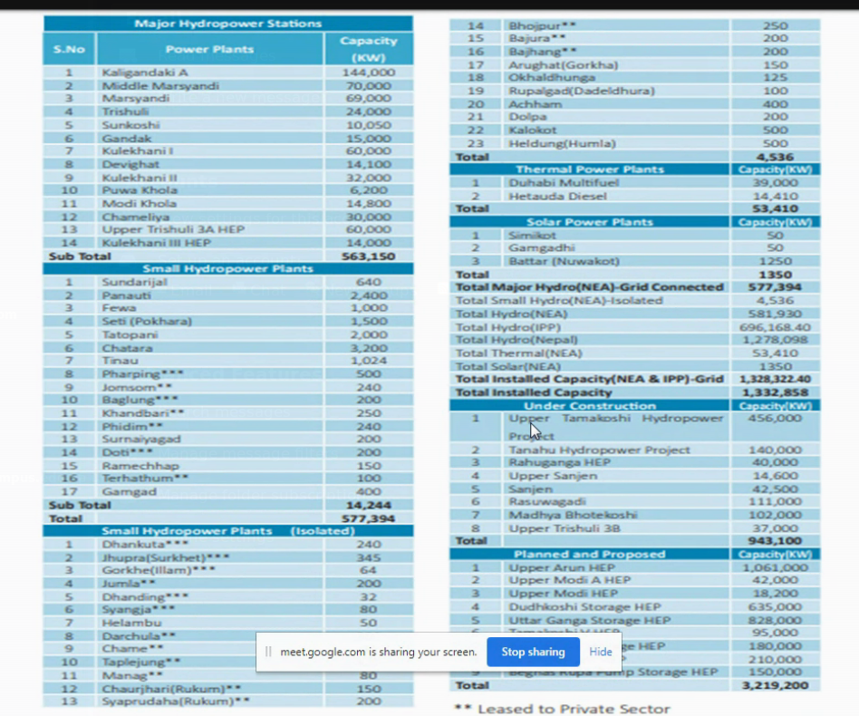
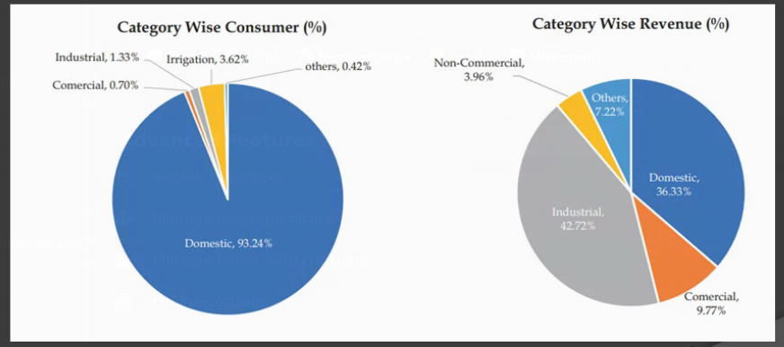
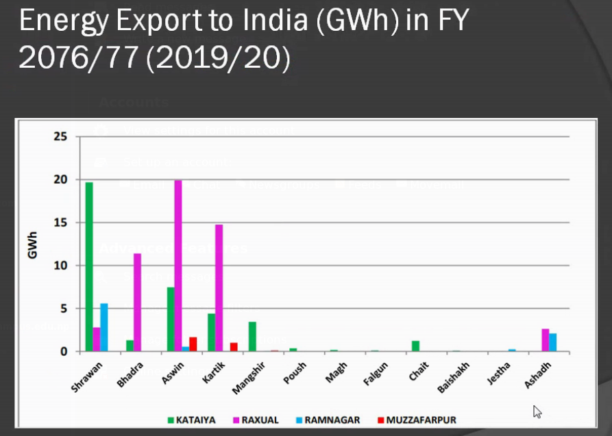
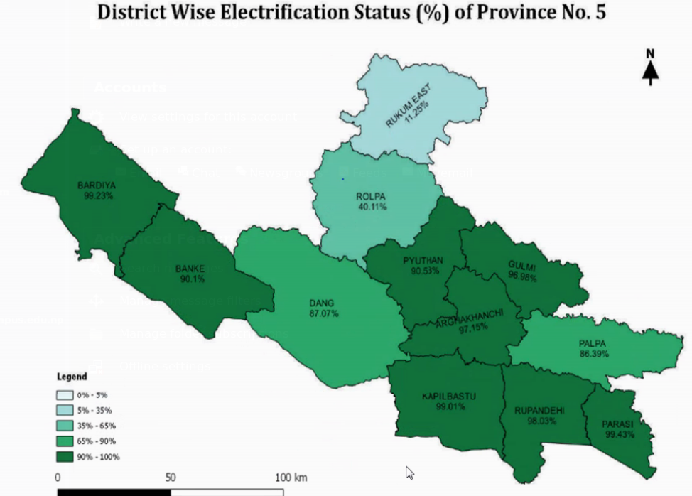
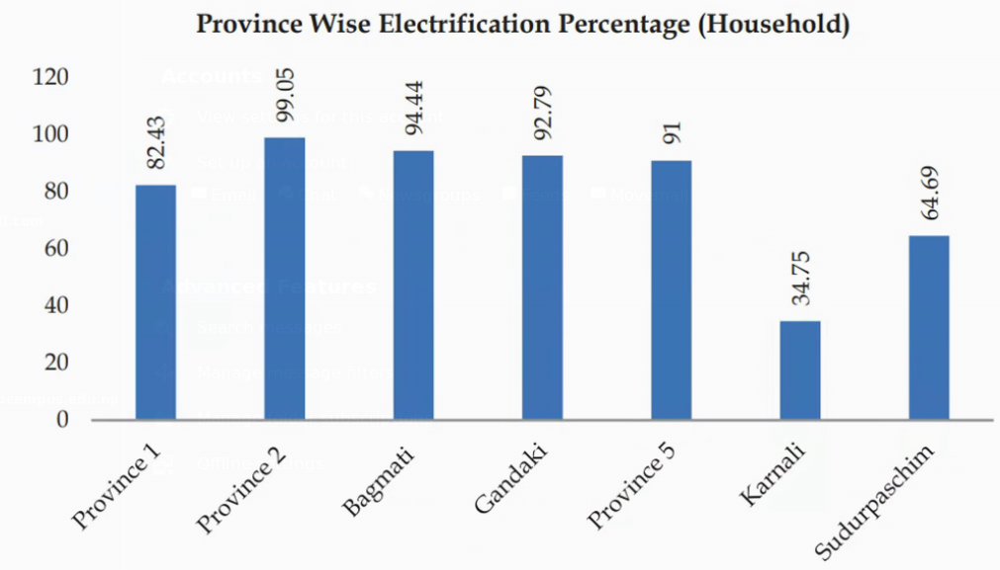
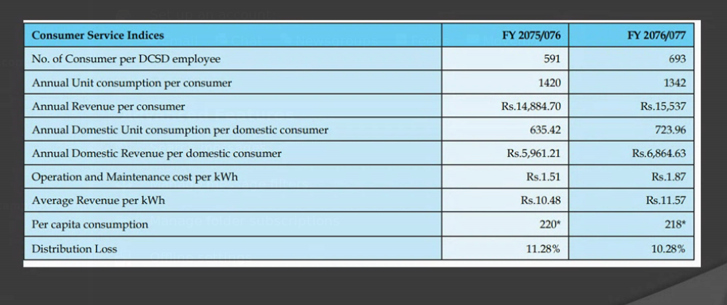
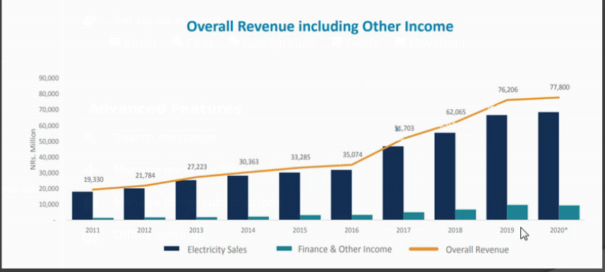
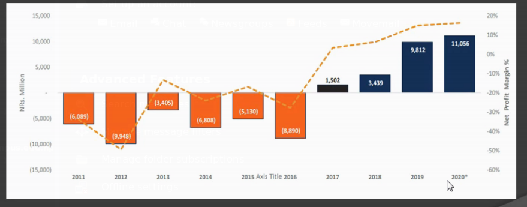

NEA
Table of Contents
1. Steps towards loadshedding management
1.1. Supply management
- Available power manage garne
- every power house lai full capacity ma run garne
- IPP (Independent Power Producers) => Private producers
- IPP lai national grid ma connect
1.2. Demand
Peak load was 1600 MW during Kulman's time. But 300MW was supply.
- psychological effect: claimed there was no loadshedding, without removing loadshedding. => Peak load reduced by 100MW. (Because, people didn't wanted to charge their devices, … just when supply was on; this also reduced losses during peak use period) :)
- awareness campaign => reduced by ~250-300MW
- industry ko supply peak load ma cut gardine. <= Didn't fall for bribe from industry owners.
Peak load reduced to 900MW.
- IPP bata add garera total supply 570MW purayo
- additional power from India.
1.3. Operation and Maintenance
Khulekhani is the only reservior Hydropower project; other are Run-off-river
1.4. Reducing Technical Loss
- Transmission loss
- Transformer loss

Figure 1: Transmission line loss
- In foreign countries minimum may be around 3%
1.5. Reducing Non-Technical Loss
This contributed much more than technical.
- Hooking

Figure 2: system loss
- 2016 ma Kulman joined when there was 25% loss
- by 2019 he reduced to 15%
Worldwide 7-8% (say 10%) is the norm; even in developed countries. Because transmission,… loss can't be reduced.
2. Capacity
- Theoritical max power 83,000MW
- But Economically feasible capacity is 43,000MW (because it may require shifting settlement areas, …)
Total installed Powerstation capacity
- 581 MW NEA
- 696 MW IPP

Figure 3: Capacity
3. Supply
- NEA produced 3021 GWh in FY 2019/20 (increase by 18.57%)
- IPP 2991 GWh (increase by 36.57%)
- Import from India 1,729 GWh (decrease by 38.55%)
Total available increased by ~2.5%
4. Revenue

Figure 4: Supply vs Revenue
Energy banking system
- Electrical engery can't be stored
- So, when we have excess we sell to India
- and in winter when we need, buy (at same rate) from India

Figure 5: Energy Export
5. Electrification Status
~85%

Figure 6: Electrification Status

Figure 7: electrification province wise
- 11 Municiplaties are not electrified!!
- Total Distribution Loss 10.28%

Figure 8: Per capita consumption
- per capita consumption 218 kWh
- Peak load manage garna lai diesel station pani establish gareko xa.

Figure 9: Revenue
- Notice the rate of rise from 2016

Figure 10: Profit loss
- NEA was losing too much money but Kulman changed everything. Not its in Profit.
- This shows the power of Good Management